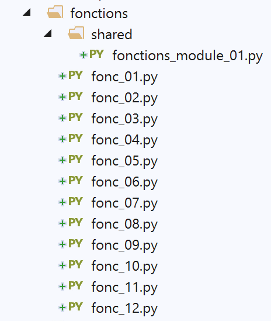
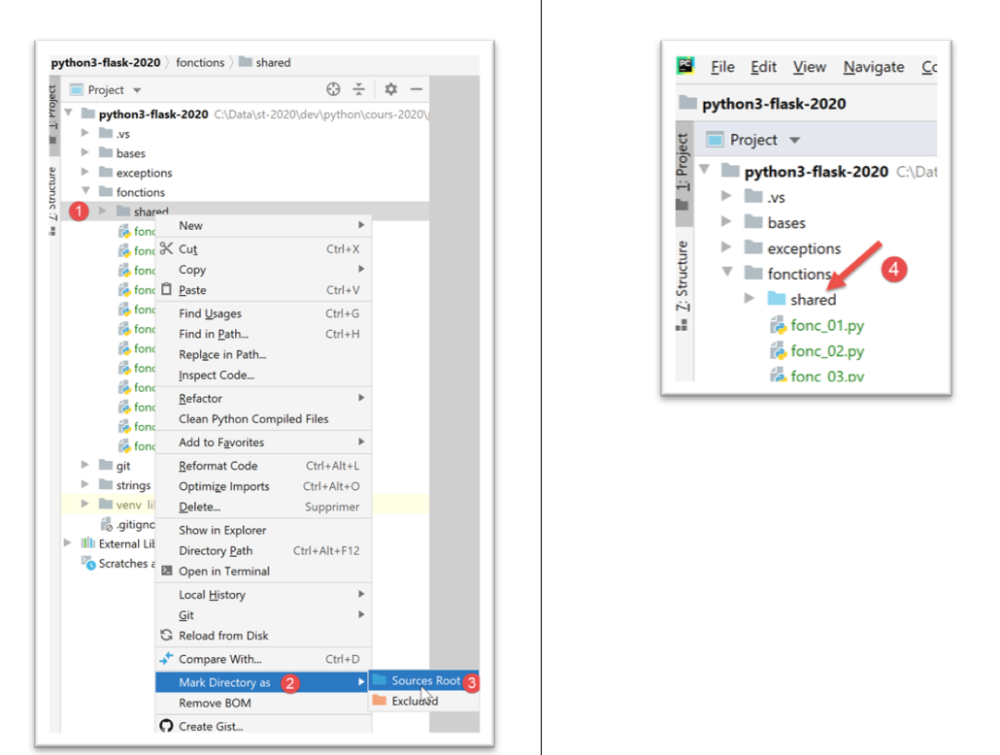

6. 函数

6.1. 脚本 [fonc_01]：变量的作用域
脚本 [fonc_01] 展示了函数间变量作用域的示例：
# 变量的作用域
def f1():
# 应避免使用全局变量
# 全局变量 i
global i
i += 1
# 局部变量 j
j = 10
print(f"f1[i,j]=[{i},{j}]")
def f2():
# 应避免使用全局变量
# 全局变量 i
global i
i += 1
# 局部变量 j
j = 20
print(f"f2[i,j]=[{i},{j}]")
def f3():
# 局部变量 i
i = 1
# 局部变量 j
j = 30
print(f"f3[i,j]=[{i},{j}]")
# 主程序
i = 0
j = 0
# 函数 f 仅在
# 只有当该函数通过 global 语句显式声明要使用它们时
# 或者该函数仅以只读方式使用全局变量
f1()
f2()
f3()
# j 没有改变，但 i 发生了变化
print(f"[i,j]=[{i},{j}]")
结果
C:\Data\st-2020\dev\python\cours-2020\python3-flask-2020\venv\Scripts\python.exe C:/Data/st-2020/dev/python/cours-2020/python3-flask-2020/fonctions/fonc_01.py
f1[i,j]=[1,10]
f2[i,j]=[2,20]
f3[i,j]=[1,30]
[i,j]=[2,0]
Process finished with exit code 0
注：
- 该脚本展示了在函数 f1 和 f2 中声明的全局变量 i 的用法。在此情况下，主程序与函数 f1 和 f2 共享同一个变量 i。
6.2. 脚本 [fonc_02]：变量的作用域
脚本 [fonc_03] 基于脚本 [fonc_02]，演示了如何避免使用全局变量：
# 变量的作用域
def f1(i):
# 局部变量 i
i += 1
# 局部变量 j
j = 10
print(f"f1[i,j]=[{i},{j}]")
# 返回修改后的值
return i
def f2(i):
# 局部变量 i
i += 1
# 局部变量 j
j = 20
print(f"f2[i,j]=[{i},{j}]")
# 返回修改后的值
return i
def f3():
# 局部变量 i
i = 1
# 局部变量 j
j = 30
print(f"f3[i,j]=[{i},{j}]")
# 主程序
i = 0
j = 0
# 函数 f 仅在
# 只有当该函数通过 global 语句显式声明要使用它们时
# 或者该函数仅以只读方式使用全局变量
i = f1(i)
i = f2(i)
f3()
# j 没有改变，但 i 发生了变化
print(f"[i,j]=[{i},{j}]")
注释：
- 第 2、12 行：变量 [i] 没有被声明为全局变量，而是作为参数传递给了函数 f1 和 f2；
- 第 9、19 行：函数 f1 和 f2 将修改后的变量 [i] 返回给主程序。主程序在第 36 和 37 行中获取该变量；
结果
C:\Data\st-2020\dev\python\cours-2020\python3-flask-2020\venv\Scripts\python.exe C:/Data/st-2020/dev/python/cours-2020/python3-flask-2020/fonctions/fonc_02.py
f1[i,j]=[1,10]
f2[i,j]=[2,20]
f3[i,j]=[1,30]
[i,j]=[2,0]
Process finished with exit code 0
6.3. 脚本 [fonc_03]：变量的作用域
脚本 [fonc_03] 展示了变量在函数内部及调用该函数的代码中同时使用时的一种特殊性，这取决于该变量在函数中是否仅被读取。
def f1():
# 此处全局变量 i 是已知的
print(f"[f1] i={i}")
# 此处全局变量 j 是已知的
print(f"[f1] j={j}")
def f2():
# 此处全局变量 i 未被识别
# 因为函数 f2 定义了一个同名的局部变量
# 因此该局部变量具有优先级
try:
# 尝试显示稍后定义的局部变量 i
print(f"[f2] i={i}")
# 后续语句将 i 设为函数 f2 的局部变量
i = 7
except BaseException as erreur:
print(f"[f2] erreur={erreur}")
def f3():
# 在此处，全局变量 i 尚未被识别
# 因为函数 f3 定义了一个同名的局部变量
# 因此该变量具有优先级
# 下面的语句将 i 定义为局部变量
i = 7
# 输出 - 此处 i 已被定义
print(f"[f3] i={i}")
# main -----------
# 函数的全局变量
i = 10
j = 20
# 调用 f1
f1()
print(f"[main] i={i}, j={j}")
# 调用 f2
f2()
print(f"[main] i={i}")
# 调用 f3
f3()
print(f"[main] i={i}")
注释
- 第 34 行：主代码定义了一个变量 [i]；
- 第1-5行：函数f1也使用了一个变量[i]，但未为其赋值。这是对变量[i]的读取。在此情况下，所使用的变量[i]来自调用代码（第34行）；
- 第8-18行：函数f2同样使用变量[i]，但在第16行为其赋值。 在 f2 中为变量 [i] 赋值，会自动将 [i] 设为函数 [f2] 的局部变量。 因此，该变量“遮蔽”了调用代码中的变量 [i]；
- 第 14 行：对局部变量 [i] 的写入操作将失败，因为到达第 14 行时该变量尚未赋值。该变量在第 16 行才被赋值。这将引发异常。因此，我们将第 14 行置于 try/catch 块中；
- 第21-29行：函数f3与函数f2功能相同，但更早定义了其局部变量[i]；
结果
C:\Data\st-2020\dev\python\cours-2020\python3-flask-2020\venv\Scripts\python.exe C:/Data/st-2020/dev/python/cours-2020/python3-flask-2020/fonctions/fonc_03.py
[f1] i=10
[f1] j=20
[main] i=10, j=20
[f2] erreur=local variable 'i' referenced before assignment
[main] i=10
[f3] i=7
[main] i=10
Process finished with exit code 0
6.4. 脚本 [fonc_04]：参数传递模式
脚本如下：
# 函数 f1
def f1(a):
a = 2
# 函数 f2
def f2(a, b):
a = 2
b = 3
return a, b
# ------------------------ main
x = 1
f1(x)
print(f"x={x}")
(x, y) = (-1, -1)
(x, y) = f2(x, y)
print(f"x={x}, y={y}")
结果
注：
- 在 Python 中，一切皆为对象。某些对象被称为“不可变”（immutable）：无法对其进行修改。数字、字符串和元组均属于此类。当 Python 对象作为参数传递给函数时，传递的是对象的引用，除非这些对象是“不可变”的，在这种情况下，传递的是对象的值；
- 函数 f1（第 2 行）和 f2（第 7 行）旨在演示输出参数的传递。我们希望函数的实际参数能被该函数修改；
- 第2-3行：函数f1修改了其形式参数a。我们想知道实际参数是否也会被修改；
- 第14-15行：实际参数为x=1。结果的第2行显示，实际参数并未被修改。因此，实际参数x和形式参数a是两个不同的对象；
- 第8-10行：函数f2修改了其形式参数a和b，并将它们作为结果返回；
- 第17-18行：将实际参数(x,y)传递给f2，并将f2的结果赋值给(x,y)。结果的第3行显示，实际参数(x,y)已被修改。
由此可得出结论：当“不可变”对象作为输出参数时，它们必须包含在函数返回的结果中。
6.5. 脚本 [fonc_05]：脚本中函数的编写顺序
脚本 [fonc_05] 表明，如果函数在代码中未曾出现过，则无法调用该函数：
# ------------------------ main
print(f2(100, 200))
# 函数 f1
def f1(a):
return a + 10
# 函数 f2
def f2(a, b):
return f1(a + b)
注
- 第 2 行会引发错误，因为它使用了尚未在脚本中定义的 f2 函数；
结果
6.6. 脚本 [fonc_06]：脚本中函数的书写顺序
脚本 [fonc_06] 表明，适用于调用代码的规则并不适用于函数：
# 函数 f2
def f2(a, b):
return f1(a + b)
# 函数 f1
def f1(a):
return a + 10
# ------------------------ 主函数
print(f2(100, 200))
注释
- 第 3 行：函数 [f2] 调用了脚本后文定义的函数 [f1]。但这并未引发错误。因此可以得出结论：Python 脚本中函数的定义顺序并不重要；
结果
6.7. 脚本 [fonc_07]：模块的使用
脚本 [fonc_07] 演示了如何将函数封装在模块中。

我们将可重用的函数封装在模块中。与其在脚本之间来回复制粘贴：
- 我们将它们放置在一个单独的文件中，并以特定方式进行声明；
- 需要这些函数的脚本“导入”包含它们的模块；
脚本 [fonctions_module_01] 如下所示：
# 函数 f2
def f2(a, b):
return f1(a + b)
# 函数 f1
def f1(a):
return a + 10
为了使脚本 [fonctions_module_01] 中的函数能够被其他脚本引用，有多种实现方式。这些方式取决于是否在 [PyCharm] 内部执行该脚本。
在 [PyCharm] 中，导入的模块会在名为 [Sources Root] 的特定文件夹中进行查找。将一个文件夹设置为 [Sources Root] 有两种方法：

- 在 [4] 中，该文件夹的颜色已发生变化；
完成此操作后，文件夹 [fonctions/modules] 会被识别为源文件夹。此时可以在脚本中写入：
以导入/使用在模块 [fonctions_module_01.py] 中定义的 f2 函数。
 |
另一种方法是通过项目属性实现：
- 上文中的序列 [1-6] 可将文件夹 [shared] 设置为存放待导入模块的文件夹；
目前除了项目根目录外，我们不会声明任何名为 [Sources Root] 的文件夹：

完成上述设置后，我们可以编写以下脚本 [fonc-07]：
# 模块的使用
import sys
# ------------------------ 主程序
print(f"Python path={sys.path}")
from fonctions.shared.fonctions_module_01 import f2
print(f2(100, 200))
- 第2行：导入对象[sys]，以便在第5行使用其属性[path]，该属性返回所谓的[Python Path]：一个用于搜索已导入模块的文件夹列表；
- 第 6 行：导入 [fonctions_module_01] 模块中的 f2 函数。 指定该模块时，需使用从项目根目录到该模块的路径。在 Pycharm 中，当脚本中搜索导入模块时，项目根目录始终属于被搜索的文件夹范围。因此，该文件夹属于项目中的 [Python Path]。第 5 行代码将帮助我们验证这一点；
- 第 6 行：若描述从项目根目录到 [fonctions_module_01] 文件夹的路径，应写为 [fonctions/shared/fonctions_module_01]。在模块路径中，斜杠（/）被点号（.）替代。因此应写为 [fonctions.modules.fonctions_module_01]；
- 在第6行之后，函数f2已知。我们在第8行使用它；
结果
C:\Data\st-2020\dev\python\cours-2020\python3-flask-2020\venv\Scripts\python.exe C:/Data/st-2020/dev/python/cours-2020/python3-flask-2020/fonctions/fonc_07.py
Python path=['C:\\Data\\st-2020\\dev\\python\\cours-2020\\python3-flask-2020\\fonctions', 'C:\\Data\\st-2020\\dev\\python\\cours-2020\\python3-flask-2020', 'C:\\Data\\st-2020\\dev\\python\\cours-2020\\python3-flask-2020\\fonctions\\shared', 'C:\\myprograms\\Python38\\python38.zip', 'C:\\myprograms\\Python38\\DLLs', 'C:\\myprograms\\Python38\\lib', 'C:\\myprograms\\Python38', 'C:\\Data\\st-2020\\dev\\python\\cours-2020\\python3-flask-2020\\venv', 'C:\\Data\\st-2020\\dev\\python\\cours-2020\\python3-flask-2020\\venv\\lib\\site-packages']
310
Process finished with exit code 0
上图：
- 绿色高亮部分显示，项目根目录是 [Python Path] 的一部分；
- 黄色高亮部分显示，已执行脚本的文件夹也属于 [Python Path]；
- [Python Path]中的其他元素直接来自Python的安装目录；
如果不使用 PyCharm 来执行 [fonc-07]，会发生什么情况？


- 在 [1] 中，会执行脚本 [fonc-07]。此时位于 [fonctions] 文件夹中；
- 在 [2] 中，可以看到执行目录属于 [Python Path]。情况总是如此。还可以看到根目录 [C:\\Data\\st-2020\\dev\\python\\cours-2020\\python3-flask-2020] 不属于 [Python Path]；
- 在 [3] 中，Python 解释器报告无法找到模块 [fonctions]；
为了查找被导入的模块 [fonctions.shared.fonctions_module_01]，Python 解释器会在 [Python Path] 的文件夹中搜索一个名为 [fonctions] 的子文件夹。 但它遍寻不着。实际上，子文件夹 [fonctions] 位于 [C:\Data\st-2020\dev\python\cours-2020\python3-flask-2020] 文件夹下，而该文件夹并不属于 [Python Path]。
脚本 [fonc-08] 为该问题提供了一个可能的解决方案。
6.8. 脚本 [fonc_08]：向 [Python Path] 添加文件夹
可以通过编程修改 [Python Path]，如脚本 [fonc-08] 所示：
# 模块的使用
import os
import sys
# 脚本文件夹
script_dir = os.path.dirname(os.path.abspath(__file__))
# 修改前的 Python 路径
print(f"Python path avant={sys.path}")
# 将文件夹 [shared] 添加到 Python 路径
sys.path.append(f"{script_dir}/shared")
# 修改后的 Python 路径
print(f"Python path après={sys.path}")
# import f2
from fonctions_module_01 import f2
# ------------------------ main
print(f2(100, 200))
注释
- 第 4 行：特殊变量 [__file__] 是正在执行的脚本名称。根据执行环境的不同，该名称可以是绝对路径（Pycharm）或相对路径（控制台）。 函数 [os.path.abspath] 返回传入文件名的绝对路径。函数 [os.path.dirname] 返回传入文件所在文件夹的绝对路径；
- 第 10 行：[sys.path] 是一个数组，其中包含在搜索模块时需要遍历的文件夹名称。我们将第 4 行定义的项目根目录添加到该数组中；
- 显示修改前（第8行）和修改后（第12行）的[Python Path]；
- 第15行：导入包含函数f2的模块[fonctions_module_01]；
在 PyCharm 中执行后，结果如下：
C:\Data\st-2020\dev\python\cours-2020\python3-flask-2020\venv\Scripts\python.exe C:/Data/st-2020/dev/python/cours-2020/python3-flask-2020/fonctions/fonc_08.py
Python path avant=['C:\\Data\\st-2020\\dev\\python\\cours-2020\\python3-flask-2020\\fonctions', 'C:\\Data\\st-2020\\dev\\python\\cours-2020\\python3-flask-2020', 'C:\\Data\\st-2020\\dev\\python\\cours-2020\\python3-flask-2020\\fonctions\\shared', 'C:\\myprograms\\Python38\\python38.zip', 'C:\\myprograms\\Python38\\DLLs', 'C:\\myprograms\\Python38\\lib', 'C:\\myprograms\\Python38', 'C:\\Data\\st-2020\\dev\\python\\cours-2020\\python3-flask-2020\\venv', 'C:\\Data\\st-2020\\dev\\python\\cours-2020\\python3-flask-2020\\venv\\lib\\site-packages']
Python path après=['C:\\Data\\st-2020\\dev\\python\\cours-2020\\python3-flask-2020\\fonctions', 'C:\\Data\\st-2020\\dev\\python\\cours-2020\\python3-flask-2020', 'C:\\Data\\st-2020\\dev\\python\\cours-2020\\python3-flask-2020\\fonctions\\shared', 'C:\\myprograms\\Python38\\python38.zip', 'C:\\myprograms\\Python38\\DLLs', 'C:\\myprograms\\Python38\\lib', 'C:\\myprograms\\Python38', 'C:\\Data\\st-2020\\dev\\python\\cours-2020\\python3-flask-2020\\venv', 'C:\\Data\\st-2020\\dev\\python\\cours-2020\\python3-flask-2020\\venv\\lib\\site-packages', 'C:\\Data\\st-2020\\dev\\python\\cours-2020\\python3-flask-2020\\fonctions/shared']
310
Process finished with exit code 0
- 第3行：可以看到文件[shared]在[Python Path]中出现了两次。虽然可以避免这种情况，但在此处并不影响；
- 第4行：函数f2已成功执行；
现在在终端中执行 [fonc-08]：
(venv) C:\Data\st-2020\dev\python\cours-2020\python3-flask-2020\fonctions>python fonc_08.py
Python path avant=['C:\\Data\\st-2020\\dev\\python\\cours-2020\\python3-flask-2020\\fonctions', 'C:\\myprograms\\Python38\\python38.zip', 'C:\\myprograms\\Python38\\DLLs', 'C:\\myprograms\\Python38\\lib', 'C:\\myprograms\\Python38', 'C:\\Data\\st-2020\\dev\\python\\cours-2020\\python3-flask-2020\\venv', 'C:\\Data\\st-2020\\dev\\python\\cours-2020\\python3-flask-2020\\venv\\lib\\site-packages']
Python path après=['C:\\Data\\st-2020\\dev\\python\\cours-2020\\python3-flask-2020\\fonctions', 'C:\\myprograms\\Python38\\python38.zip', 'C:\\myprograms\\Python38\\DLLs', 'C:\\myprograms\\Python38\\lib', 'C:\\myprograms\\Python38', 'C:\\Data\\st-2020\\dev\\python\\cours-2020\\python3-flask-2020\\venv', 'C:\\Data\\st-2020\\dev\\python\\cours-2020\\python3-flask-2020\\venv\\lib\\site-packages', 'C:\\Data\\st-2020\\dev\\python\\cours-2020\\python3-flask-2020\\fonctions/shared']
310
- 第 2 行：与之前一样，文件 [shared] 不在 [Python Path] 中；
- 第 3 行：现在它就在里面了；
- 第 4 行：已找到函数 f2；
6.9. 脚本 [fonc_09]：参数类型的声明
脚本 [fonc_09] 展示了可以声明函数参数的类型以及返回值的类型。不过，这种声明仅对函数的文档说明有帮助。 Python 解释器不会检查函数的实际参数是否确实具有预期的类型。不过，Pycharm 会报告实际参数与形式参数之间的类型不一致。仅此一点就足以使类型声明变得不可或缺。
脚本如下：
# 一个带有参数类型说明的函数
# 这仅作为文档使用，因为 Python 解释器不会考虑这些声明
def show(param: int) -> int:
print(f"param={param}, type(param)={type(param)}")
return param + 1
# main -------------------------
print(show(4))
show("xyz")
注：
- 第 5 行：声明形式参数 [param] 的类型为 [int]，且函数的返回值类型也是 [int]；
- 第 11 行：函数 [show] 的实际参数类型正确；
- 第 12 行：函数 [show] 的实际参数类型不正确；
结果
- 第 10 行：参数 [param] 的类型为 [str]。当此消息显示时，我们已经进入函数 [show] 的代码。 因此，Python 解释器接受了函数 [show] 的实际参数类型为 [str]；
- 代码第7行触发了异常，该异常在结果的第4至10行中有所体现；
然而，PyCharm 指出存在异常：

在 [1] 中，PyCharm 已突出显示了错误的调用。
6.10. 脚本 [fonc_10]：命名参数
要向函数传递参数，可以使用该函数的正式参数名称。在这种情况下，无需遵循正式参数的顺序：
# 可以使用形式名来指定实际参数
def f(x, y):
return x + y
# main
print(f(y=10, x=3))
注释
- 第 2 行：函数 f 有两个形式参数 x 和 y；
- 第 7 行：在调用函数 f 时，可以使用形式参数的名称。这种做法至少在以下两种情况下很有用：
- 函数参数较多，且其中大部分具有默认值。调用时，上述方法可仅对不希望使用默认值的参数进行初始化；
- 如果形式参数具有有意义的名称，那么在函数调用中使用命名参数可以提高代码的可读性；
结果
6.11. 脚本 [fonc_11]：递归函数
脚本 [fonc_11] 是递归函数（即调用自身）的一个示例：
# 递归函数
def fact(i: int) -> int:
# 阶乘(1) 等于 1
# 递归函数必须在某个时刻终止
if i == 1:
return 1
else:
# 阶乘(i)=i*阶乘(i-1)
return i * fact(i - 1)
# ---------- main
print(f"fact(8)={fact(8)}")
注释
- 第 1-9 行：阶乘函数；
- 第 9 行：函数 [factorielle] 调用自身；
- 第 5-6 行：递归函数必须在满足某个条件时停止，否则会导致无限递归；
结果
6.12. 脚本 [fonc_12]：递归函数
函数 [fonc_12] 进一步详细说明了递归的工作原理：
# 递归函数
# 参数 j 的行为
def fact(i: int, j: int) -> int:
# 递归函数的终止
if i == 1:
print(f"j={j}")
return 1
else:
# 对 j 进行操作
j += 1
print(f"avant fact j={j}")
# 递归
f = fact(i - 1, j)
print(f"après fact j={j}")
# 结果
return i * f
# ---------- main
print(f"fact(8)={fact(8, 0)}")
注释
- 第5行：我们仍然关注阶乘函数。向其添加参数[j]；
- 第12行：变量j在每次计算阶乘时都会递增。我们分别显示递归（第15行）之前（第12行）和之后（第16行）的j的值；
结果
- 第2-8行：可见[j]的值在递归持续进行期间不断增长，直至满足递归终止条件。此时，对函数[fact]的调用返回过程将与调用顺序相反；
- 第10-16行：这些显示结果反映了阶乘调用的一次次返回。变量[j]的值逐渐恢复，直至回到初始值1；